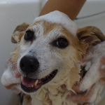

宮崎市の動物病院。コウロギ動物病院
家族の一員である愛犬・愛猫のホームドクターをめざして。
良い医療には、飼い主さんと獣医師のお互いの信頼関係が第一だと考えます。家族の一員として深い愛情で結ばれている飼い主さんと動物たち。私たちも飼い主さんと同じ気持ちで、動物たちの診療にあたっています。
動物は言葉を話せないため、まず飼い主さんからじっくりお話を伺うことから始め、病気の内容や治療方法、回復の状態など飼い主さんと密にコミュニケーションをとりながら、診療を進めていきます。
そして、飼い主さんと動物たちがともに安心して過ごしていける生活環境作りのお手伝いをしたいと考えています。
安全で質の高い獣医医療の提供をめざして
なかなか治りにくい腎臓病、肝臓病、椎間板ヘルニア、アレルギーなど慢性病でお悩みのワンちゃん、ネコちゃん、腫瘍で抗がん剤を使いたくない、高齢のため手術ができない等でお困りのワンちゃん、ネコちゃんの飼い主さん、 どうぞ一度ご相談ください。
話すことで飼い主さんの気持ちが楽になれば、その気持ちは動物に伝わり、彼らの体調にプラスの影響を与えます。飼い主さんのお話をじっくり伺った上で、その子の症状に合わせた身体に優しい治療を行っていきます。動物が本来持っている自然治癒力や免疫力を引き出し、高めていくという身体に優しい治療のため、治療中の動物たちはストレスもなく元気に過ごすことができます。
日々獣医医療も進歩しています。常に新しい知識の習得と技術の向上、維持に努め、安全で質の高い獣医医療の提供を心がけております。
心身の総合的な健康を維持、増進するための予防医療に力を入れています。
言葉を話せない動物たちだからこそ、元気がないかな、食欲が落ちたかな、やせてきたかなと思っているうちに、非常に重く生命に危険が及ぶ状態になってしまっていることが多々あります。
もっと早く気づいてあげれば・・そのような後悔をしないためにも、日頃からのケア（予防）はとても重要だと考えています。
ワンニャンドック等の各種検査での早期発見・早期治療が動物にとっても、家族の皆様にとっても負担が少なくてすみます。ささいなことでも気になることがございましたら、お気軽にご来院ください。
また、当院が取り入れているホモトキシコロジーやバイオレゾナンス等は、未病のうちからケアすることで、病気を寄せ付けない身体作りを目指しています。そのことによって、大切な家族が重い状態になって苦しんだりすることなく、健やかに一生を過ごすことができます。
少しでも日常と違うことがございましたら、お気軽にご来院ください。その後どうケアするのかは、じっくりとご家族の皆様と考えていきたいと思います。
informationお知らせ
-
バイオレゾナンスによる測定とトリートメントは予約制です。
詳細またはご予約はお電話でどうぞ。0985-67-4312 -
ペットドックのおすすめ！
犬猫の1年は人の４年にも相当すると言われています。 ペット達の健康を守るために、１年に1〜2回のペットドックの受診をおすすめします。
人同様、ペット達にも心臓病・肝臓病・腎臓病・歯周病などが増えてきています。
定期健診をすることで、症状が発症する前に病気を発見、治療することができます。
オプションでバイオレゾナンス全身健康チェック・エコー検査・レントゲン検査もございます。
完全予約制となっております。
詳細またはご予約はお電話でどうぞ。0985-67-4312 -
休診日のお知らせ
土曜日午後・日曜日・祝日
-
各種クレジットカードのご利用が可能です。
- ペイペイ使えます。
-
トリミングの予約受付中！（月〜土の完全予約制です）
ご予約は 0985-67-4312
-
写真館更新しました！
-
コウロギ動物病院となりに人のための鍼灸治療院を開院しました。
詳しくはコチラへ